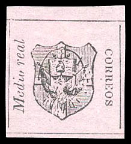
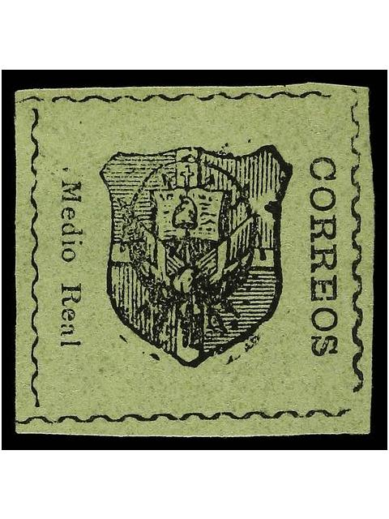
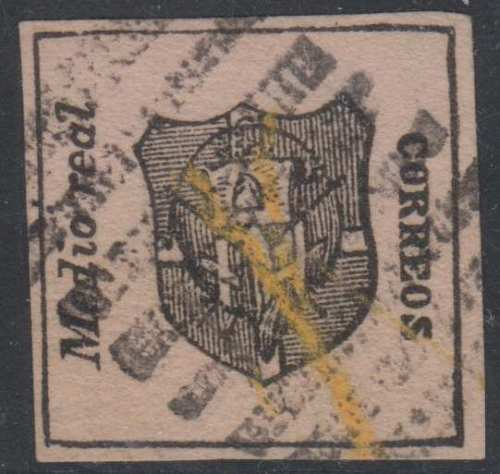
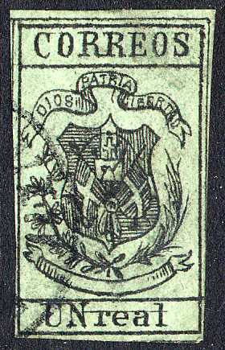
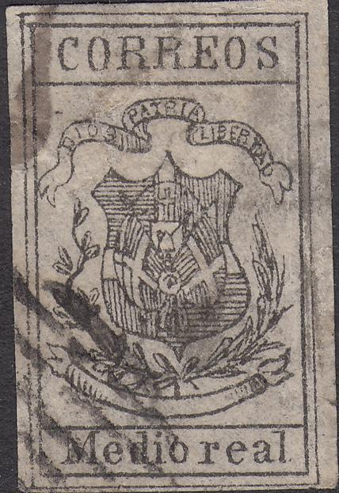

Images obtained from a Harmers auction
Return To Catalogue - Dominican Republic 1879-1920 and miscellaneous
Note: on my website many of the
pictures can not be seen! They are of course present in the
catalogue;
contact me if you want to purchase it.
Before 1865, the Dominican Republic was part of Spain (after having been independent from 1844 to 1861). Stamps of the Spanish Westindies were used during this period.

Images obtained from a Harmers auction

Second type, 'Medio Real' written differently
1/2 r black on lilac (only 4000 issued) 1/2 r black on green (different type) 1 r black on pale green (only 2000 issued) 1 r black on yellow (different type)
These stamps were issued without gum.
Value of the stamps |
|||
vc = very common c = common * = not so common ** = uncommon |
*** = very uncommon R = rare RR = very rare RRR = extremely rare |
||
| Value | Unused | Used | Remarks |
| All values | RRR | RRR | |
Pencancels and circular datecancels (I've only seen Santo Domingo) seem to be the most common cancels on these stamps:


Pencancel and Santo Domingo circular date cancel
Reprint of the 1/2 r, but black on yellow instead of black on
pale green; next to it two 1/2 r black on green reprints. Images
obtained from a Harmers auction

Reprint

Forgery
1/2 r black on yellow
1/2 r black on red/lilac
1/2 r black on blue
1/2 r black on grey
1/2 r black on olive
1/2 r blue on red
1 r black on green ('UN')
1 r black on green ('Un')
1 r black on blue
1 r black on grey
1 r black on red/lilac
These stamps were issued without gum.
Value of the stamps |
|||
vc = very common c = common * = not so common ** = uncommon |
*** = very uncommon R = rare RR = very rare RRR = extremely rare |
||
| Value | Unused | Used | Remarks |
| 1/2 r black on yellow | RR | RR | |
| 1/2 r black on red/lilac | RR | RR | |
| 1/2 r black on blue | RR | RR | |
| 1/2 r black on grey | RR | RR | |
| 1/2 r black on olive | RRR | RRR | |
| 1/2 r blue on red | RR | RR | With black inscriptions: RRR |
| 1 r black on green | RR | RR | 'UN': RRR 'Un' with watermark lozenges: RRR |
| 1 r black on blue | RRR | RRR | |
| 1 r black on grey | RR | RR | |
| 1 r black on red/lilac | RR | RR | |
I've seen several errors of these stamps with 'CORREOS' and the value shifted.
Error: top and bottom inscription missing.
Other error: 'Un' and 'real' too close to each other
I've seen the circular datestamp of Santo Domingo. But red 'C86' cancels of the British postal agency at Puerta Plata also exist on these stamps:
Red 'C86' cancels
Pen stroke cancels also exist on this issue.
(All forgeries, reduced sizes)

Forgeries
All the above images are forgeries. They were offered by Fournier (though I'm not sure if he actually made them). Note the weird cancels consisting of lines or dots. Apparently these cancels were printed together with the stamps.
Page from a Fournier Album.

(Forgery)
The above stamp is the 3rd forgery described in Album Weeds. There is a line above 'real', which is not present in the genuine stamps. It also exists printed on other coloured paper (I've seen grey, green and yellow).

In these two forgeries, the bottom right part of the central
shield is deformed (too fat).

I've been told that this is a forgery of the 1 r value
(Other forgeries, reduced sizes)


Other forgeries

What is this? A similar perforated 'label' with 'CORREOS' curved
at the top.
For stamps of Dominican Republic issued from 1879 onwards click here.
There exist some bogus issues of 1866 prepared by J.M Chute (and probably S. Allan Taylor) of Boston USA; they have the arms of the Dominican Republic in an ellipse with the word 'CORREOS' above it and the value (I have only seen 'DOS REALES') below it. There is no country name indicated. I have seen the following values: 2 r blue, 2 r brown, 2 r red, 2 r green and 2 r orange (all cancelled).


{kind=link}
{kind=link}
{kind=link}
{kind=link}
{kind=link}
{kind=link}